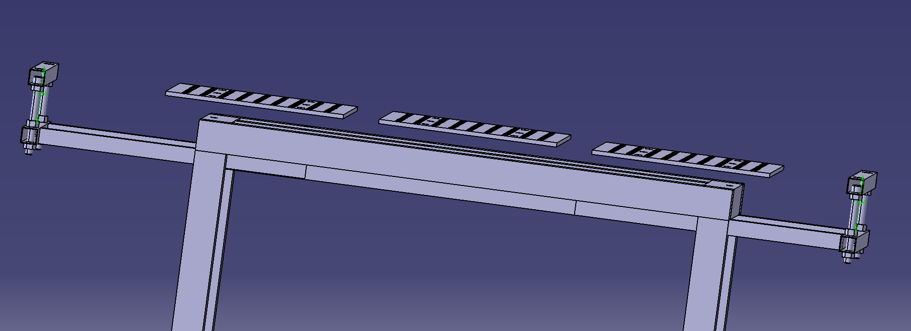

↔️ Erweiterungssystem: 000-005-103
500mm Ausladung je Seite
1000mm Gesamtausladung max.
Teleskopstufenlos arretierbar
Funktion & Zielsetzung
📐 Erweiterung der Arbeitsfläche
Flexibler Arbeitsplatz für die Bearbeitung überlanger Bauteile.
↔️ Variable Ausladung
Beidseitige Verlängerung um jeweils bis zu 500 mm.
🧍 Ergonomie
Individuelle Höhenanpassung für optimale Arbeitshaltung.
Technische Ausführung – Teleskop-Rahmen
CAD-Ansicht des Teleskop-Erweiterungsarms

Zwei parallele Teleskop-Arme, an beiden Enden je eine Querleiste mit Höhenverstellung; die Klemmschrauben sitzen mittig auf den Führungsrohren.
| Segment | Material | Funktion |
|---|---|---|
| A · Feststehendes Segment | Vierkantrohr 50 × 50 × 4 mm | Integrierte Führung für den mobilen Teil; Arretierung mittels Klemmschraube → stufenlose Längenfixierung. |
| B · Mobiles Segment (Auszug) | Vierkantrohr 40 × 40 × 2 mm | Präzise Passung für reibungsloses Gleiten im Hauptrahmen. |
Prinzip: 40×40 gleitet in 50×50 → Spiel ca. 1 mm pro Seite (50 − 2×4 = 42 mm Innenmaß).
Teile & Dokumente
- 000-005-003-14-Kantrohr 40 × 40 × 2 – 1500 mm.
- 000-005-102-1Erweiterungssystem – Mobile Teil.
🧩 Gesamtzusammenbau: 000-005-200-1 (Baugruppenstruktur)
| Baugruppe | Zeichnungsnr. | Inhalt |
|---|---|---|
| 🔝 Oberteil | 000-005-104 | Rahmen 80×80×3 + 3 Lochplatten |
| 🔽 Unterteil / Basis | 000-005-105 | Beine 750 mm + Adapterplatten |
| ↔️ Erweiterungssystem | 000-005-103 | Teleskop 50×50 / 40×40 |
| 🕳️ Lochplatten | 000-005-013 | 3× D16 · 800×500×12 |
Kennwerte des Gesamtsystems (Stand 10.04.)
| Merkmal | Wert |
|---|---|
| Tischmaß (Grundkonzept) | ca. 1500 × 700 mm |
| Arbeitsplatten | 3 × 800 × 500 × 12 mm (D16) |
| Rahmenprofil | 80 × 80 × 3 mm Vierkantrohr |
| Standhöhe (Beine) | 750 mm |
| Mobilität | Lenkrollen auf Adapterplatte 120 × 120 × 10 |
| Erweiterung | max. 1.000 mm (2 × 500 mm, Teleskop) |
Zusammenfassung: Der Gesamtzusammenbau vereint Unterteil (fahrbar) + Oberteil
(Lochplatten) + Erweiterungssystem (teleskopierbar) zu einem modularen
Schweißarbeitsplatz nach 5S-Prinzip.